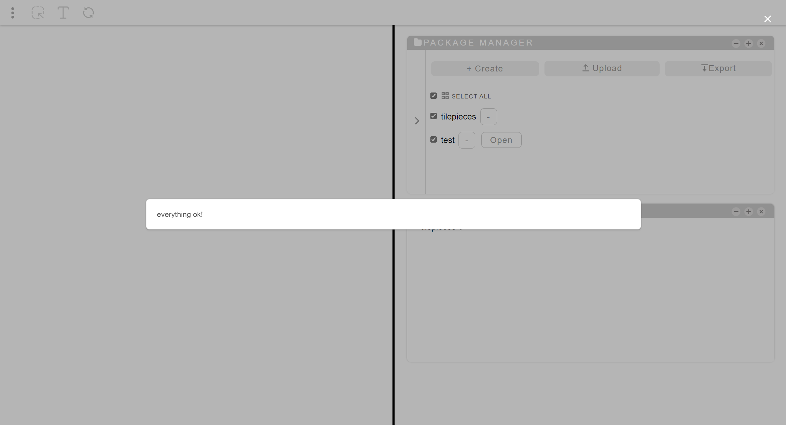

Dialog
A dialog is a pop-up with which the application communicates messages to the user.
It can disable all the other operations until its closure.
It may not have a closing button. This indicates that it is waiting for a certain asynchronous process to finish.
A dialog can be of 4 types:
- Normal. There will be a message and a key to close (it can also be closed using the ESC key). In some cases (for example during save or initialization processes), this will not have a chance to be closed until the process is finished. Windows linked to the application page will also not be editable.
- Alert. She adds an "ok" button to confirm that she has read the message. It is especially used to show error messages (in this case an image also appears next to it).
- Prompt Dialog. Asks for a text type field. It is usually placed at the beginning of processes when a file, project or component is created.
- Confirm Dialog. He asks for confirmation to perform an operation.